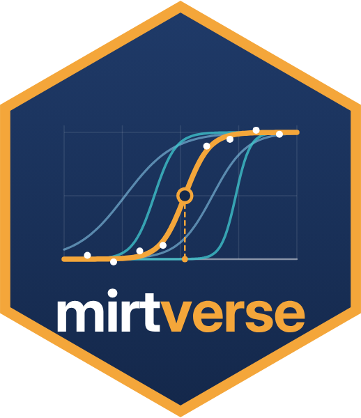

mirtverse, mirt paketinin üzerine kuruludur. Modelleri mirt kestirir; mirtverse ise model seçmenize, sonuçları okumanıza, grafik üretmenize ve sonuçları paylaşmanıza yardım eder. Her fonksiyon sıradan bir mirt modeli kabul eder; iki paketi birlikte kullanabilirsiniz.
install.packages("mirtverse", repos = c(
"https://okanbulut.r-universe.dev",
"https://cloud.r-project.org"))library(mirtverse) mirt de yüklenir
data <- expand.table(LSAT7)
sel <- select_model(data)
mod <- sel$best # sıradan bir mirt modeli
select_model(), dif() ve fit_rt() sonuçlarında da çalışır.tidy(); DMF, tepki süresi, banka ve süreç nesnelerinde de çalışır.
d <- dif(data, group = gender, model = "2PL") tidy(d); interpret(d); gg_dif(d)
gg_trace(mod)madde eğrileri; type = "expected"
gg_info(mod)type = "test", "items", "se"
gg_wright(mod)bireyler ve maddeler aynı ölçekte
gg_itemfit(mod)kesme değeriyle madde uyumu
gg_q3(mod, cutoff = 0.2)yerel bağımlılık
gg_scores(mod)birey puanlarının dağılımı
gg_empirical(mod, item)model eğrisi ve gözlenen
gg_dif(d)type = "effect" veya "curves"
"trace", "expected", "info",
"iteminfo", "se", "wright", "itemfit",
"q3", "scores".Ortak argümanlar: which.items maddeleri seçer, theta_lim = c(-4, 4) yetenek aralığını belirler.
sim <- sim_rt(N = 1500, J = 20, rapid = 0.08) mod <- mirt(sim$responses, 1, "2PL") fit <- fit_rt(mod, sim$rt)
"nt10", "nt15", "nt20".format = "shiny".mv_ask_setup("claude") # bir kez
scr <- mv_ask("Fit a 2PL, check DIF by gender
and make a report", data = mydata)
run_script(scr)
save_script(scr, "analysis.R")
dry_run = TRUE neyin gönderileceğini gösterir;
anonymize = TRUE sütun adlarını gizler. Anahtar sözcük ayrıştırıcısıyla çevrim dışı da çalışır.Tek bir nesne, bir testi belirtke tablosundan madde bankası izlemeye kadar taşır. Her aşama işini yapar,
ardından bir kapı çalıştırır: Sonraki aşamadan önce değerlendirmeniz için işaretler kaydeden
kontroller. Her karar kayda geçer ve p$code tüm sürecin R kodunu saklar.
p <- mv_pipeline("Certification exam")
p <- add_responses(p, certexam, items = 3:34,
key = certexam_key, group = "language")
p <- calibrate(p, model = "2PL")
flags(p)
pipeline_report(p, "report.html")
status = "all" karara bağlananları da içerir.strict = TRUE ile açık review ve block
işaretleri, bir karar kaydedilene kadar sonraki aşamayı durdurur.mv_rules(q3 = 0.25, reliability = 0.85).
preset = "lenient" pilot çalışmalar için eşikleri gevşetir.print(p) aşamaların durumunu, tidy(p) tüm işaretleri gösterir.
c(Etik = 4, Hukuk = 3).verify_items() anahtarları kontrol eder;
add_items(p, items) kendi maddelerinizi ekler.read_reviews(p, reviews) onu geri okur."stocking-lord", "haebara",
"mean-sigma", "mean-mean" veya "fixed".
bank_items(p, name) onları kaydeder; mv_bank(mod) bir modelden banka başlatır.p <- drop_items(p, "Q14", note = "Miskey")
p <- calibrate(p, model = "2PL")
p <- override(p, check = "dif_large",
note = "French version revised")
p <- bank_items(p, name = "Certification bank")
p <- set_cuts(p, cuts = 18, scale = "raw",
labels = c("Fail", "Pass"))
p <- score_persons(p)
Adım adım anlatımın tamamı web sitesindeki Assessment pipeline makalesindedir (İngilizce).
item_map(p, rp = 0.67) standart belirleme için maddeleri ölçeğe yerleştirir.score_open(p, responses)
açık uçlu cevapları bir rubrik ve bir büyük dil modeli (LLM) ya da kendi eğittiğiniz modelle puanlar.LLMretire_items(p, items, status, note) maddeleri kullanımdan kaldırır.Bunlar önerilen paketlerdir: Yalnızca kullandığınız aşamalar için kurun. Bağlama ve kesme puanı yöntemleri pakette yerleşiktir.
launch_workbench().